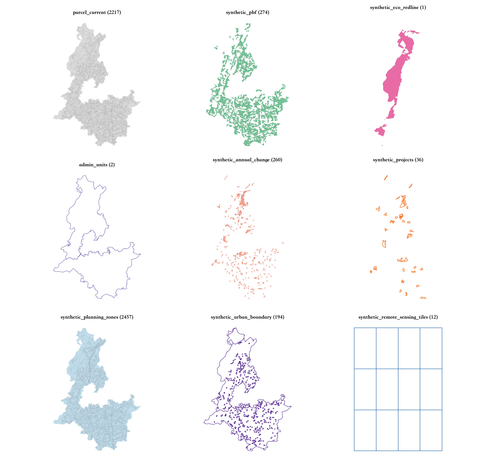
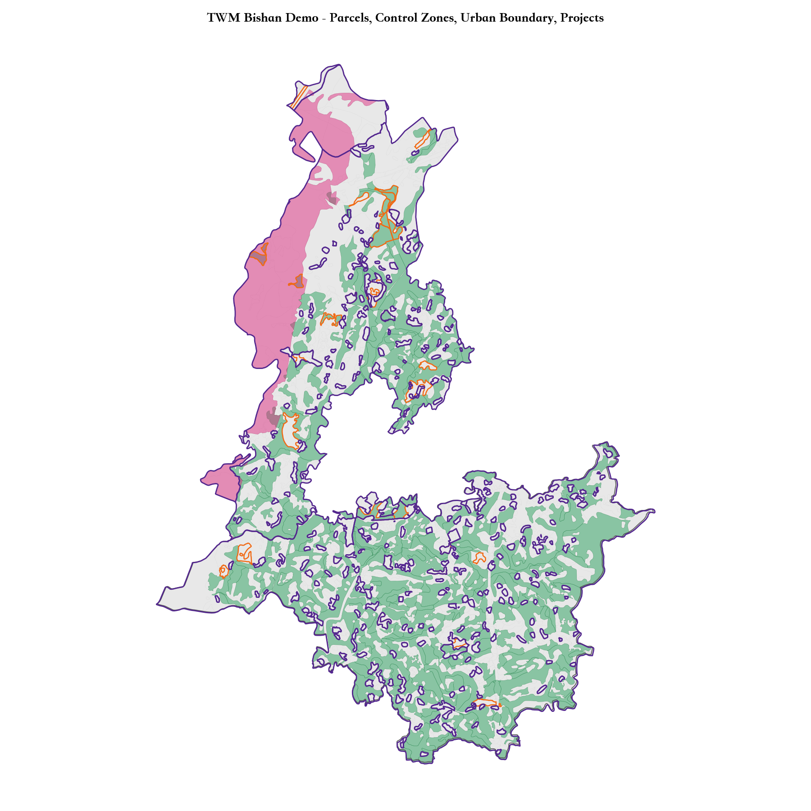
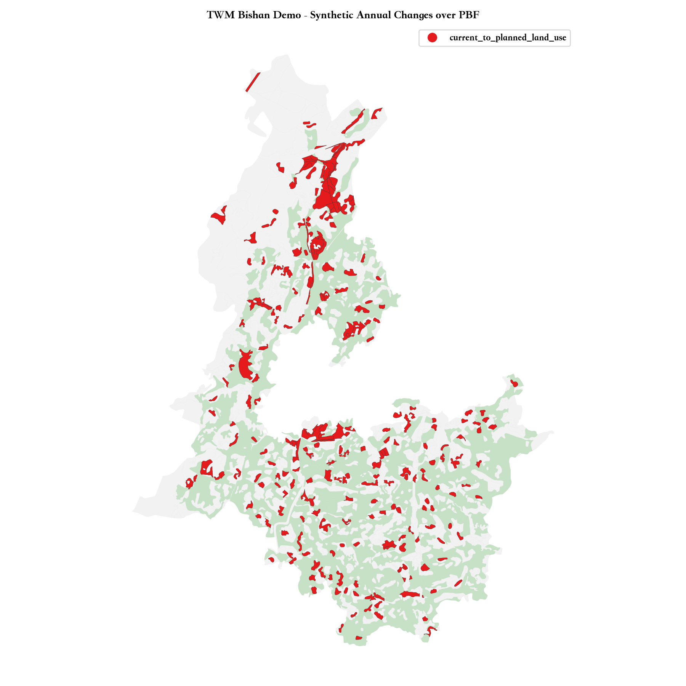
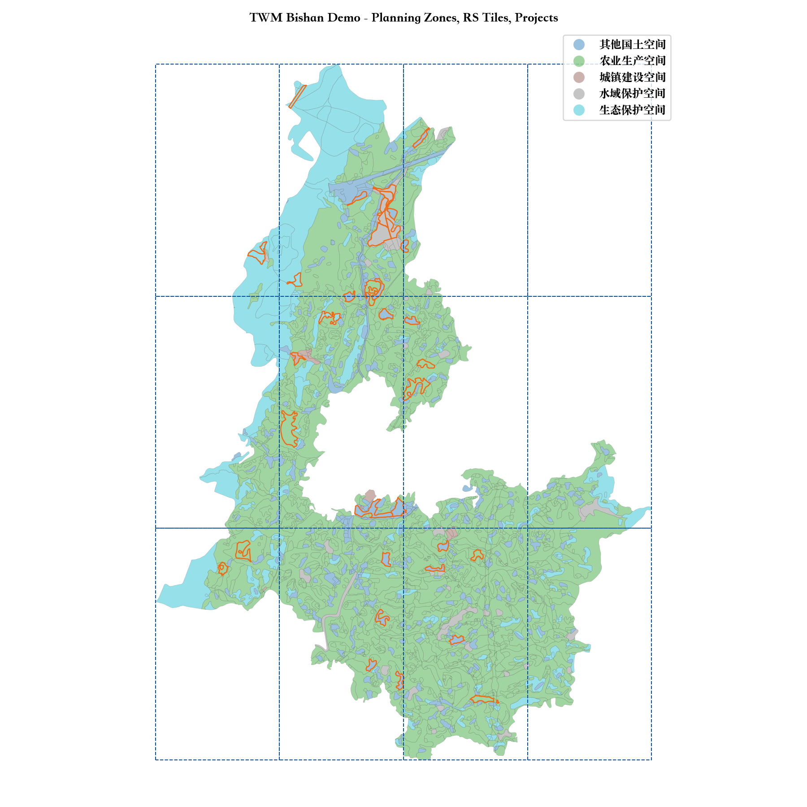

这些数据用于工程测试和演示。合成图层均带有 synthetic=true 和 not_for_production=true，不能用于生产级自然资源治理结论。
QGIS/ArcGIS: open data_agent/test_data/twm_one_map_village_standard_sample/preview/twm_one_map_village_standard_sample_layers.gpkg to inspect all layers together.
Manifest: open data_agent/test_data/twm_one_map_village_standard_sample/dataset_manifest.json.
QA: open data_agent/test_data/twm_one_map_village_standard_sample/data_quality_report.md.
| item | value |
|---|---|
| status | pass |
| blockers | 0 |
| warnings | 2 |
| warning |
|---|
| parcel_current: 5 features exceed 10% area mismatch |
| real_imagery_manifest.json missing; using synthetic raster fixture fallback |
| role | 中文名 | 业务角色 | rows | crs | geometry | synthetic | not_for_production | qa_use_for_rules | 说明 |
|---|---|---|---|---|---|---|---|---|---|
| parcel_current | 村规划现状地类图斑样例 | 状态对象底板 | 2217 | EPSG:4523 | MultiPolygon, Polygon | {"False": 2217} | {"True": 2217} | {"True": 2217} | 来自村规划汇交样例 JQDLTB 的现状地类图斑，保留源字段并补齐 TWM 标准契约字段。 |
| synthetic_pbf | 契约测试永久基本农田替身 | 耕地保护硬约束 | 274 | EPSG:4523 | MultiPolygon, Polygon | {"True": 274} | {"True": 274} | {"True": 274} | 由村规划现状耕地图斑派生的永久基本农田契约测试层，不代表真实永久基本农田。 |
| synthetic_eco_redline | 村规划生态保护红线样例 | 生态保护硬约束 | 1 | EPSG:4523 | MultiPolygon | {"False": 1} | {"True": 1} | {"True": 1} | 来自村规划汇交样例 STBHHX 的生态保护红线要素，补齐 TWM 标准契约字段。 |
| admin_units | 村规划范围样例 | 区域汇总与项目范围 | 2 | EPSG:4523 | Polygon | {"False": 2} | {"True": 2} | {"True": 2} | 来自村规划汇交样例 GHFW 的村级规划范围。 |
| synthetic_annual_change | 村规划现状-规划差异图斑 | 状态变化与时序证据 | 260 | EPSG:4523 | MultiPolygon, Polygon | {"False": 260} | {"True": 260} | {"True": 260} | 由 TDGHDL 中近期地类与规划地类差异派生的变化图斑，用于 TWM 时序状态测试。 |
| synthetic_projects | 契约测试建设项目范围替身 | 项目约束校验主体 | 36 | EPSG:4523 | MultiPolygon, Polygon | {"True": 36} | {"True": 36} | {"True": 36} | 从村规划差异和规划地类中派生的建设项目范围契约测试层，不代表真实审批项目。 |
| synthetic_planning_zones | 村规划土地规划地类样例 | 规划一致性约束 | 2457 | EPSG:4523 | MultiPolygon, Polygon | {"False": 2457} | {"True": 2457} | {"True": 2457} | 来自村规划汇交样例 TDGHDL 的规划地类，用于用途管制分区角色兼容性验证。 |
| synthetic_urban_boundary | 村规划建设用地管制区样例 | 城镇开发边界/建设管制约束 | 194 | EPSG:4523 | MultiPolygon, Polygon | {"False": 194} | {"True": 194} | {"True": 194} | 来自村规划汇交样例 JSYDGZQ 的建设用地管制区，映射为 TWM 开发边界角色。 |
| synthetic_remote_sensing_tiles | 契约测试遥感瓦片索引 | 多模态观测证据 | 12 | EPSG:4523 | Polygon | {"True": 12} | {"True": 12} | {"True": 12} | 覆盖村规划样例范围的合成遥感瓦片索引，用于 MMFE 证据链结构测试。 |
| field | 中文别名 | 说明 |
|---|---|---|
| BSM | 标识码 | 标识码。 |
| YSDM | 要素代码 | 要素代码。 |
| TBBH | 图斑编号 | 图斑编号。 |
| XZQDM | 行政区代码 | 行政区代码。 |
| XZQMC | 行政区名称 | 行政区名称。 |
| XZDLDM | XZDLDM | XZDLDM。 |
| XZDLMC | XZDLMC | XZDLMC。 |
| DLDM | DLDM | DLDM。 |
| DLMC | 地类名称 | 地类名称。 |
| QSDWDM | 权属单位代码 | 权属单位代码。 |
| QSDWMC | 权属单位名称 | 权属单位名称。 |
| ZLDWDM | 坐落单位代码 | 坐落单位代码。 |
| ZLDWMC | 坐落单位名称 | 坐落单位名称。 |
| PDJB | PDJB | PDJB。 |
| QSXZ | 权属性质 | 权属性质。 |
| TKXS | TKXS | TKXS。 |
| TBMJ | 图斑面积 | 图斑面积。 |
| XZDWMJ | XZDWMJ | XZDWMJ。 |
| LXDWMJ | LXDWMJ | LXDWMJ。 |
| TKMJ | TKMJ | TKMJ。 |
| TBDLMJ | 图斑地类面积 | 图斑地类面积。 |
| DLBZ | DLBZ | DLBZ。 |
| PZWH | PZWH | PZWH。 |
| SM | SM | SM。 |
| geom_area_m2 | 投影几何面积 | 投影几何面积。 |
| source_village | 来源村 | 来源村。 |
| source_layer | 来源图层 | 来源图层。 |
| source_path | 来源文件 | 来源文件。 |
| source_BSM | 源标识码 | 源标识码。 |
| JQDLMC | JQDLMC | JQDLMC。 |
| bsm_norm | bsm_norm | bsm_norm。 |
| DLBM | 地类编码 | 地类编码。 |
| SJNF | 数据年份 | 数据年份。 |
| MSSM | 描述说明 | 描述说明。 |
| category | 归并地类 | 归并地类。 |
| admin9 | admin9 | admin9。 |
| tbmj_area_rel_error | 图斑面积相对误差 | 图斑面积相对误差。 |
| source_sample | 是否来源样例 | 是否来源样例。 |
| derived_from_source_sample | 是否由样例派生 | 是否由样例派生。 |
| synthetic | 是否合成 | 是否合成。 |
| not_for_production | 禁止生产使用 | 禁止生产使用。 |
| source_dataset | 来源数据集 | 来源数据集。 |
| qa_use_for_rules | 可用于规则计算 | 可用于规则计算。 |
| field | 中文别名 | 说明 |
|---|---|---|
| BSM | 标识码 | 标识码。 |
| YSDM | 要素代码 | 要素代码。 |
| TBBH | 图斑编号 | 图斑编号。 |
| XZQDM | 行政区代码 | 行政区代码。 |
| XZQMC | 行政区名称 | 行政区名称。 |
| XZDLDM | XZDLDM | XZDLDM。 |
| XZDLMC | XZDLMC | XZDLMC。 |
| DLDM | DLDM | DLDM。 |
| DLMC | 地类名称 | 地类名称。 |
| QSDWDM | 权属单位代码 | 权属单位代码。 |
| QSDWMC | 权属单位名称 | 权属单位名称。 |
| ZLDWDM | 坐落单位代码 | 坐落单位代码。 |
| ZLDWMC | 坐落单位名称 | 坐落单位名称。 |
| PDJB | PDJB | PDJB。 |
| QSXZ | 权属性质 | 权属性质。 |
| TKXS | TKXS | TKXS。 |
| TBMJ | 图斑面积 | 图斑面积。 |
| XZDWMJ | XZDWMJ | XZDWMJ。 |
| LXDWMJ | LXDWMJ | LXDWMJ。 |
| TKMJ | TKMJ | TKMJ。 |
| TBDLMJ | 图斑地类面积 | 图斑地类面积。 |
| DLBZ | DLBZ | DLBZ。 |
| PZWH | PZWH | PZWH。 |
| SM | SM | SM。 |
| geom_area_m2 | 投影几何面积 | 投影几何面积。 |
| source_village | 来源村 | 来源村。 |
| source_layer | 来源图层 | 来源图层。 |
| source_path | 来源文件 | 来源文件。 |
| source_BSM | 源标识码 | 源标识码。 |
| JQDLMC | JQDLMC | JQDLMC。 |
| bsm_norm | bsm_norm | bsm_norm。 |
| DLBM | 地类编码 | 地类编码。 |
| SJNF | 数据年份 | 数据年份。 |
| MSSM | 描述说明 | 描述说明。 |
| category | 归并地类 | 归并地类。 |
| admin9 | admin9 | admin9。 |
| tbmj_area_rel_error | 图斑面积相对误差 | 图斑面积相对误差。 |
| source_sample | 是否来源样例 | 是否来源样例。 |
| derived_from_source_sample | 是否由样例派生 | 是否由样例派生。 |
| synthetic | 是否合成 | 是否合成。 |
| not_for_production | 禁止生产使用 | 禁止生产使用。 |
| source_dataset | 来源数据集 | 来源数据集。 |
| qa_use_for_rules | 可用于规则计算 | 可用于规则计算。 |
| YJJBNTTBBH | 永久基本农田图斑编号 | 永久基本农田图斑编号。 |
| YJJBNTTBMJ | 永久基本农田图斑面积 | 永久基本农田图斑面积。 |
| YJJBNTMJ | 永久基本农田面积 | 永久基本农田面积。 |
| BHKSSJ | 保护开始时间 | 保护开始时间。 |
| BHJSSJ | 保护结束时间 | 保护结束时间。 |
| WDGD | 稳定利用耕地标识 | 稳定利用耕地标识。 |
| control_id | 管控区编号 | 管控区编号。 |
| control_name | 管控区名称 | 管控区名称。 |
| control_type | 管控区类型 | 管控区类型。 |
| control_grade | 管控区等级 | 管控区等级。 |
| control_area_m2 | 管控区面积 | 管控区面积。 |
| synthetic_method | 合成方法 | 合成方法。 |
| field | 中文别名 | 说明 |
|---|---|---|
| BSM | 标识码 | 标识码。 |
| YSDM | 要素代码 | 要素代码。 |
| XZQDM | 行政区代码 | 行政区代码。 |
| XZQMC | 行政区名称 | 行政区名称。 |
| JSMJ | JSMJ | JSMJ。 |
| GZMC | GZMC | GZMC。 |
| SM | SM | SM。 |
| geom_area_m2 | 投影几何面积 | 投影几何面积。 |
| source_village | 来源村 | 来源村。 |
| source_layer | 来源图层 | 来源图层。 |
| source_path | 来源文件 | 来源文件。 |
| source_BSM | 源标识码 | 源标识码。 |
| XJXZQDM | 县级行政区代码 | 县级行政区代码。 |
| XJXZQMC | 县级行政区名称 | 县级行政区名称。 |
| LHLX | 陆海类型 | 陆海类型。 |
| MJ | 面积 | 面积。 |
| XJXZQHDM | 县级行政区划代码 | 县级行政区划代码。 |
| LXDM | 类型代码 | 类型代码。 |
| MC | 名称 | 名称。 |
| QYMJ | 区域面积 | 区域面积。 |
| SLSJ | 收录时间 | 收录时间。 |
| GKCS | 管控措施 | 管控措施。 |
| redline_id | 红线区编号 | 红线区编号。 |
| redline_name | 红线区名称 | 红线区名称。 |
| protection_level | 保护等级 | 保护等级。 |
| ecological_function | 生态功能 | 生态功能。 |
| redline_area_m2 | 红线区面积 | 红线区面积。 |
| source_sample | 是否来源样例 | 是否来源样例。 |
| derived_from_source_sample | 是否由样例派生 | 是否由样例派生。 |
| synthetic | 是否合成 | 是否合成。 |
| not_for_production | 禁止生产使用 | 禁止生产使用。 |
| source_dataset | 来源数据集 | 来源数据集。 |
| qa_use_for_rules | 可用于规则计算 | 可用于规则计算。 |
| field | 中文别名 | 说明 |
|---|---|---|
| BSM | 标识码 | 标识码。 |
| YSDM | 要素代码 | 要素代码。 |
| XZQDM | 行政区代码 | 行政区代码。 |
| XZQMC | 行政区名称 | 行政区名称。 |
| KZMJ | KZMJ | KZMJ。 |
| JSMJ | JSMJ | JSMJ。 |
| MS | MS | MS。 |
| geom_area_m2 | 投影几何面积 | 投影几何面积。 |
| source_village | 来源村 | 来源村。 |
| source_layer | 来源图层 | 来源图层。 |
| source_path | 来源文件 | 来源文件。 |
| source_BSM | 源标识码 | 源标识码。 |
| OBJECTID | OBJECTID | OBJECTID。 |
| 村名 | 村名 | 村名。 |
| Shape_Leng | Shape_Leng | Shape_Leng。 |
| Shape_Area | Shape_Area | Shape_Area。 |
| admin_code | admin_code | admin_code。 |
| admin_name | admin_name | admin_name。 |
| admin_level | admin_level | admin_level。 |
| admin_parent_code | admin_parent_code | admin_parent_code。 |
| admin_level_rank | admin_level_rank | admin_level_rank。 |
| admin_source_level | admin_source_level | admin_source_level。 |
| matched_admin9_values | matched_admin9_values | matched_admin9_values。 |
| matched_parcel_count | matched_parcel_count | matched_parcel_count。 |
| overlap_area_m2 | overlap_area_m2 | overlap_area_m2。 |
| overlap_ratio_to_parcels | overlap_ratio_to_parcels | overlap_ratio_to_parcels。 |
| source_sample | 是否来源样例 | 是否来源样例。 |
| derived_from_source_sample | 是否由样例派生 | 是否由样例派生。 |
| synthetic | 是否合成 | 是否合成。 |
| not_for_production | 禁止生产使用 | 禁止生产使用。 |
| qa_use_for_rules | 可用于规则计算 | 可用于规则计算。 |
| field | 中文别名 | 说明 |
|---|---|---|
| BSM | 标识码 | 标识码。 |
| YSDM | 要素代码 | 要素代码。 |
| XZQDM | 行政区代码 | 行政区代码。 |
| XZQMC | 行政区名称 | 行政区名称。 |
| TBBH | 图斑编号 | 图斑编号。 |
| JQDLDM | JQDLDM | JQDLDM。 |
| JQDLMC | JQDLMC | JQDLMC。 |
| GHDLDM | GHDLDM | GHDLDM。 |
| GHDLMC | GHDLMC | GHDLMC。 |
| CGHDLDM | CGHDLDM | CGHDLDM。 |
| CGHDLMC | CGHDLMC | CGHDLMC。 |
| QSDWDM | 权属单位代码 | 权属单位代码。 |
| QSDWMC | 权属单位名称 | 权属单位名称。 |
| ZLDWDM | 坐落单位代码 | 坐落单位代码。 |
| ZLDWMC | 坐落单位名称 | 坐落单位名称。 |
| QSXZ | 权属性质 | 权属性质。 |
| TBMJ | 图斑面积 | 图斑面积。 |
| XZDWMJ | XZDWMJ | XZDWMJ。 |
| LXDWMJ | LXDWMJ | LXDWMJ。 |
| TKMJ | TKMJ | TKMJ。 |
| GHDLMJ | GHDLMJ | GHDLMJ。 |
| TKXS | TKXS | TKXS。 |
| XMMC | 项目名称 | 项目名称。 |
| XMXZ | XMXZ | XMXZ。 |
| XMLX | XMLX | XMLX。 |
| SM | SM | SM。 |
| geom_area_m2 | 投影几何面积 | 投影几何面积。 |
| source_village | 来源村 | 来源村。 |
| source_layer | 来源图层 | 来源图层。 |
| source_path | 来源文件 | 来源文件。 |
| source_BSM | 源标识码 | 源标识码。 |
| source_GHDLDM | source_GHDLDM | source_GHDLDM。 |
| source_GHDLMC | source_GHDLMC | source_GHDLMC。 |
| GHFQDM | 规划分区代码 | 规划分区代码。 |
| GHFQMC | 规划分区名称 | 规划分区名称。 |
| MJ | 面积 | 面积。 |
| plan_zone_id | 用途分区编号 | 用途分区编号。 |
| plan_zone_type | 用途分区类型 | 用途分区类型。 |
| plan_zone_name | 用途分区名称 | 用途分区名称。 |
| plan_rule | 用途管制规则 | 用途管制规则。 |
| zone_area_m2 | 分区面积 | 分区面积。 |
| source_sample | 是否来源样例 | 是否来源样例。 |
| derived_from_source_sample | 是否由样例派生 | 是否由样例派生。 |
| synthetic | 是否合成 | 是否合成。 |
| not_for_production | 禁止生产使用 | 禁止生产使用。 |
| source_dataset | 来源数据集 | 来源数据集。 |
| qa_use_for_rules | 可用于规则计算 | 可用于规则计算。 |
| change_id | 变化编号 | 变化编号。 |
| from_dlbm | 变化前地类编码 | 变化前地类编码。 |
| from_dlmc | 变化前地类名称 | 变化前地类名称。 |
| to_dlbm | 变化后地类编码 | 变化后地类编码。 |
| to_dlmc | 变化后地类名称 | 变化后地类名称。 |
| OPT_DLBM | OPT_DLBM | OPT_DLBM。 |
| OPT_DLMC | OPT_DLMC | OPT_DLMC。 |
| ORIG_DLBM | ORIG_DLBM | ORIG_DLBM。 |
| CHG_FLAG | CHG_FLAG | CHG_FLAG。 |
| change_type | 变化类型 | 变化类型。 |
| change_year | 变化年份 | 变化年份。 |
| event_date | 事件日期 | 事件日期。 |
| temporal_stage | 时序阶段 | 时序阶段。 |
| evidence_confidence | 证据置信度 | 证据置信度。 |
| source_feature_id | 来源要素编号 | 来源要素编号。 |
| field | 中文别名 | 说明 |
|---|---|---|
| YSDM | 要素代码 | 要素代码。 |
| XMDM | 项目代码 | 项目代码。 |
| DZJGH | 电子监管号 | 电子监管号。 |
| AJBH | 案卷编号 | 案卷编号。 |
| XMMC | 项目名称 | 项目名称。 |
| SZXZQDM | 所在行政区代码 | 所在行政区代码。 |
| SZXZQMC | 所在行政区名称 | 所在行政区名称。 |
| YDMJ | 用地面积 | 用地面积。 |
| SQDW | 申请单位 | 申请单位。 |
| XMPZLX | 项目批准类型 | 项目批准类型。 |
| HYFLBM | 行业分类编码 | 行业分类编码。 |
| HYFLMC | 行业分类名称 | 行业分类名称。 |
| TDYTDM | 土地用途代码 | 土地用途代码。 |
| TDYTMC | 土地用途名称 | 土地用途名称。 |
| ZYNYDMJ | 占用农用地面积 | 占用农用地面积。 |
| ZYGDMJ | 占用耕地面积 | 占用耕地面积。 |
| SJSTHXMJ | 涉及生态红线面积 | 涉及生态红线面积。 |
| ZYJSYDMJ | 占用建设用地面积 | 占用建设用地面积。 |
| ZYWLDMJ | 占用未利用地面积 | 占用未利用地面积。 |
| SQRQ | 申请日期 | 申请日期。 |
| GXRQ | 更新日期 | 更新日期。 |
| project_id | 项目编号 | 项目编号。 |
| project_name | 项目名称 | 项目名称。 |
| project_type | 项目类型 | 项目类型。 |
| approval_status | 审批状态 | 审批状态。 |
| risk_scenario | 风险场景 | 风险场景。 |
| review_priority | 复核优先级 | 复核优先级。 |
| planned_start | 计划开始日期 | 计划开始日期。 |
| planned_end | 计划结束日期 | 计划结束日期。 |
| planned_area_m2 | 项目计划面积 | 项目计划面积。 |
| source_feature_id | 来源要素编号 | 来源要素编号。 |
| source_village | 来源村 | 来源村。 |
| source_layer | 来源图层 | 来源图层。 |
| source_path | 来源文件 | 来源文件。 |
| source_sample | 是否来源样例 | 是否来源样例。 |
| derived_from_source_sample | 是否由样例派生 | 是否由样例派生。 |
| synthetic | 是否合成 | 是否合成。 |
| not_for_production | 禁止生产使用 | 禁止生产使用。 |
| synthetic_method | 合成方法 | 合成方法。 |
| source_dataset | 来源数据集 | 来源数据集。 |
| qa_use_for_rules | 可用于规则计算 | 可用于规则计算。 |
| BSM | 标识码 | 标识码。 |
| admin9 | admin9 | admin9。 |
| field | 中文别名 | 说明 |
|---|---|---|
| BSM | 标识码 | 标识码。 |
| YSDM | 要素代码 | 要素代码。 |
| XZQDM | 行政区代码 | 行政区代码。 |
| XZQMC | 行政区名称 | 行政区名称。 |
| TBBH | 图斑编号 | 图斑编号。 |
| JQDLDM | JQDLDM | JQDLDM。 |
| JQDLMC | JQDLMC | JQDLMC。 |
| GHDLDM | GHDLDM | GHDLDM。 |
| GHDLMC | GHDLMC | GHDLMC。 |
| CGHDLDM | CGHDLDM | CGHDLDM。 |
| CGHDLMC | CGHDLMC | CGHDLMC。 |
| QSDWDM | 权属单位代码 | 权属单位代码。 |
| QSDWMC | 权属单位名称 | 权属单位名称。 |
| ZLDWDM | 坐落单位代码 | 坐落单位代码。 |
| ZLDWMC | 坐落单位名称 | 坐落单位名称。 |
| QSXZ | 权属性质 | 权属性质。 |
| TBMJ | 图斑面积 | 图斑面积。 |
| XZDWMJ | XZDWMJ | XZDWMJ。 |
| LXDWMJ | LXDWMJ | LXDWMJ。 |
| TKMJ | TKMJ | TKMJ。 |
| GHDLMJ | GHDLMJ | GHDLMJ。 |
| TKXS | TKXS | TKXS。 |
| XMMC | 项目名称 | 项目名称。 |
| XMXZ | XMXZ | XMXZ。 |
| XMLX | XMLX | XMLX。 |
| SM | SM | SM。 |
| geom_area_m2 | 投影几何面积 | 投影几何面积。 |
| source_village | 来源村 | 来源村。 |
| source_layer | 来源图层 | 来源图层。 |
| source_path | 来源文件 | 来源文件。 |
| source_BSM | 源标识码 | 源标识码。 |
| source_GHDLDM | source_GHDLDM | source_GHDLDM。 |
| source_GHDLMC | source_GHDLMC | source_GHDLMC。 |
| GHFQDM | 规划分区代码 | 规划分区代码。 |
| GHFQMC | 规划分区名称 | 规划分区名称。 |
| MJ | 面积 | 面积。 |
| plan_zone_id | 用途分区编号 | 用途分区编号。 |
| plan_zone_type | 用途分区类型 | 用途分区类型。 |
| plan_zone_name | 用途分区名称 | 用途分区名称。 |
| plan_rule | 用途管制规则 | 用途管制规则。 |
| zone_area_m2 | 分区面积 | 分区面积。 |
| source_sample | 是否来源样例 | 是否来源样例。 |
| derived_from_source_sample | 是否由样例派生 | 是否由样例派生。 |
| synthetic | 是否合成 | 是否合成。 |
| not_for_production | 禁止生产使用 | 禁止生产使用。 |
| source_dataset | 来源数据集 | 来源数据集。 |
| qa_use_for_rules | 可用于规则计算 | 可用于规则计算。 |
| field | 中文别名 | 说明 |
|---|---|---|
| BSM | 标识码 | 标识码。 |
| YSDM | 要素代码 | 要素代码。 |
| XZQDM | 行政区代码 | 行政区代码。 |
| XZQMC | 行政区名称 | 行政区名称。 |
| GZQLXDM | GZQLXDM | GZQLXDM。 |
| GZQMJ | GZQMJ | GZQMJ。 |
| SM | SM | SM。 |
| geom_area_m2 | 投影几何面积 | 投影几何面积。 |
| source_village | 来源村 | 来源村。 |
| source_layer | 来源图层 | 来源图层。 |
| source_path | 来源文件 | 来源文件。 |
| source_BSM | 源标识码 | 源标识码。 |
| GHFQDM | 规划分区代码 | 规划分区代码。 |
| GHFQMC | 规划分区名称 | 规划分区名称。 |
| MJ | 面积 | 面积。 |
| CZMC | 城镇名称 | 城镇名称。 |
| XJXZQHDM | 县级行政区划代码 | 县级行政区划代码。 |
| CZKFMJ | 城镇开发面积 | 城镇开发面积。 |
| SLSJ | 收录时间 | 收录时间。 |
| boundary_id | 边界编号 | 边界编号。 |
| boundary_type | 边界类型 | 边界类型。 |
| boundary_name | 边界名称 | 边界名称。 |
| boundary_area_m2 | 边界面积 | 边界面积。 |
| source_sample | 是否来源样例 | 是否来源样例。 |
| derived_from_source_sample | 是否由样例派生 | 是否由样例派生。 |
| synthetic | 是否合成 | 是否合成。 |
| not_for_production | 禁止生产使用 | 禁止生产使用。 |
| source_dataset | 来源数据集 | 来源数据集。 |
| qa_use_for_rules | 可用于规则计算 | 可用于规则计算。 |
| field | 中文别名 | 说明 |
|---|---|---|
| tile_id | 影像瓦片编号 | 影像瓦片编号。 |
| modality | 模态类型 | 模态类型。 |
| sensor | 传感器 | 传感器。 |
| acquisition_date | 采集日期 | 采集日期。 |
| band_set | 波段组合 | 波段组合。 |
| cloud_cover_pct | 云量百分比 | 云量百分比。 |
| image_uri | 影像资源地址 | 影像资源地址。 |
| raster_product_id | 栅格产品编号 | 栅格产品编号。 |
| raster_uri | 栅格资源地址 | 栅格资源地址。 |
| tile_area_m2 | 瓦片覆盖面积 | 瓦片覆盖面积。 |
| source_sample | 是否来源样例 | 是否来源样例。 |
| derived_from_source_sample | 是否由样例派生 | 是否由样例派生。 |
| synthetic | 是否合成 | 是否合成。 |
| not_for_production | 禁止生产使用 | 禁止生产使用。 |
| synthetic_method | 合成方法 | 合成方法。 |
| source_dataset | 来源数据集 | 来源数据集。 |
| qa_use_for_rules | 可用于规则计算 | 可用于规则计算。 |
| metric | value |
|---|---|
| project_pbf_intersections | 76 |
| project_pbf_unique_projects | 33 |
| project_eco_intersections | 2 |
| project_eco_unique_projects | 2 |
| annual_change_pbf_intersections | 327 |
| annual_change_pbf_unique_changes | 198 |
| project_planning_intersections | 333 |
| project_planning_unique_projects | 36 |
| project_rs_tile_intersections | 43 |
| project_rs_tile_unique_projects | 36 |
| overlay | raw_intersections | touch_or_lt_threshold | positive_intersections | unique_left | unique_right | mean_overlap_ratio_left | p50_overlap_ratio_left | gt_99pct_left | partial_gt_1pct_left |
|---|---|---|---|---|---|---|---|---|---|
| project_pbf | 76 | 37 | 39 | 22 | 28 | 0.303361 | 0.001649 | 11 | 2 |
| project_eco | 2 | 0 | 2 | 2 | 1 | 0.999364 | 0.999364 | 2 | 0 |
| project_planning | 333 | 297 | 36 | 36 | 36 | 1.0 | 1.0 | 36 | 0 |
| pbf_eco | 11 | 0 | 11 | 11 | 1 | 0.35885 | 0.112957 | 3 | 6 |
| relation | rows | unique_projects | columns |
|---|---|---|---|
| change_parcel_rel | 507 | 0 | relation_id, relation_type, change_id, bsm_norm, match_type, confidence, synthetic, not_for_production |
| project_eco_rel | 2 | 2 | relation_id, relation_type, project_id, redline_id, right_role, overlap_area_m2, overlap_ratio_left, overlap_ratio_right |
| project_parcel_rel | 110 | 36 | relation_id, relation_type, project_id, bsm_norm, right_role, overlap_area_m2, overlap_ratio_left, overlap_ratio_right |
| project_pbf_rel | 39 | 22 | relation_id, relation_type, project_id, control_id, right_role, overlap_area_m2, overlap_ratio_left, overlap_ratio_right |
| project_planning_rel | 36 | 36 | relation_id, relation_type, project_id, plan_zone_id, right_role, overlap_area_m2, overlap_ratio_left, overlap_ratio_right |
| project_rs_tile_rel | 43 | 36 | relation_id, relation_type, project_id, tile_id, right_role, overlap_area_m2, overlap_ratio_left, overlap_ratio_right |
| project_urban_boundary_rel | 36 | 36 | relation_id, relation_type, project_id, boundary_id, right_role, overlap_area_m2, overlap_ratio_left, overlap_ratio_right |
| table | rows | unique_projects | columns |
|---|---|---|---|
| approval_records | 36 | 36 | YSDM, DKBH, DKMC, DKMJ, DKXZQDM, DKXZQMC, DKYTDM, DKYTMC |
| enforcement_events | 24 | 22 | BSM, YSDM, WFXWZJ, WFDKXH, YGTBZJ, XZQDM, JCSDQ, JCSDH |
| metadata_vector | 10 | 0 | data_id, resource_id, data_name, data_alias, data_des, data_format, data_type, data_size |
| multimodal_evidence_index | 51 | 0 | evidence_id, evidence_type, evidence_uri, linked_object_id, linked_object_type, observed_date, confidence, synthetic |
| review_tasks | 24 | 22 | review_task_id, enforcement_id, project_id, rule_eval_id, task_status, reviewer_role, due_date, review_result |
| rule_evaluation | 108 | 36 | rule_eval_id, project_id, rule_id, rule_name_zh, severity, finding_status, finding_basis, metric_value |
| standard_field_catalog | 130 | 0 | field_name, field_alias_zh, lifecycle_status, introduced_version, deprecated_version, replacement_field, standard_version, synthetic |
| state_snapshots | 11 | 0 | snapshot_year, temporal_stage, land_space_type, feature_count, area_m2, area_delta_m2, source_dataset, synthetic |
| raster | 中文名 | path | size | crs | valid_pixels | mean | synthetic |
|---|---|---|---|---|---|---|---|
| synthetic_ndvi_2026 | 合成NDVI观测栅格 | rasters/synthetic_ndvi_2026.tif | 256x256 | EPSG:4523 | 22604 | 0.66006 | True |
| synthetic_change_intensity_2026 | 合成变化强度栅格 | rasters/synthetic_change_intensity_2026.tif | 256x256 | EPSG:4523 | 22604 | 0.093399 | True |
No rows.
| metric | value |
|---|---|
| parcel_bbox_coverage_ratio | 0.3789 |
| parcel_connected_components | 1 |
| parcel_largest_component_features | 2217 |
| parcel_largest_component_ratio | 1.0 |




| project_id | control_id |
|---|---|
| VPRJ-0001 | YJJBNTTB-000002 |
| VPRJ-0001 | YJJBNTTB-000058 |
| VPRJ-0001 | YJJBNTTB-000012 |
| VPRJ-0002 | YJJBNTTB-000003 |
| VPRJ-0002 | YJJBNTTB-000010 |
| VPRJ-0002 | YJJBNTTB-000067 |
| VPRJ-0003 | YJJBNTTB-000137 |
| VPRJ-0003 | YJJBNTTB-000169 |
| VPRJ-0003 | YJJBNTTB-000198 |
| VPRJ-0004 | YJJBNTTB-000008 |
| VPRJ-0004 | YJJBNTTB-000004 |
| VPRJ-0005 | YJJBNTTB-000003 |
| VPRJ-0005 | YJJBNTTB-000059 |
| VPRJ-0006 | YJJBNTTB-000124 |
| VPRJ-0006 | YJJBNTTB-000188 |
| VPRJ-0007 | YJJBNTTB-000137 |
| VPRJ-0007 | YJJBNTTB-000169 |
| VPRJ-0007 | YJJBNTTB-000198 |
| VPRJ-0007 | YJJBNTTB-000194 |
| VPRJ-0008 | YJJBNTTB-000037 |
| project_id | redline_id |
|---|---|
| VPRJ-0008 | VECO-000001 |
| VPRJ-0021 | VECO-000001 |
| project_id | plan_zone_id |
|---|---|
| VPRJ-0001 | VPLAN-000416 |
| VPRJ-0001 | VPLAN-000353 |
| VPRJ-0001 | VPLAN-000350 |
| VPRJ-0001 | VPLAN-000788 |
| VPRJ-0001 | VPLAN-000789 |
| VPRJ-0001 | VPLAN-000424 |
| VPRJ-0001 | VPLAN-000426 |
| VPRJ-0001 | VPLAN-000824 |
| VPRJ-0001 | VPLAN-000429 |
| VPRJ-0002 | VPLAN-000147 |
| VPRJ-0002 | VPLAN-000161 |
| VPRJ-0002 | VPLAN-000162 |
| VPRJ-0002 | VPLAN-000189 |
| VPRJ-0002 | VPLAN-000173 |
| VPRJ-0002 | VPLAN-000172 |
| VPRJ-0002 | VPLAN-000211 |
| VPRJ-0002 | VPLAN-000212 |
| VPRJ-0002 | VPLAN-000185 |
| VPRJ-0002 | VPLAN-000187 |
| VPRJ-0002 | VPLAN-000186 |